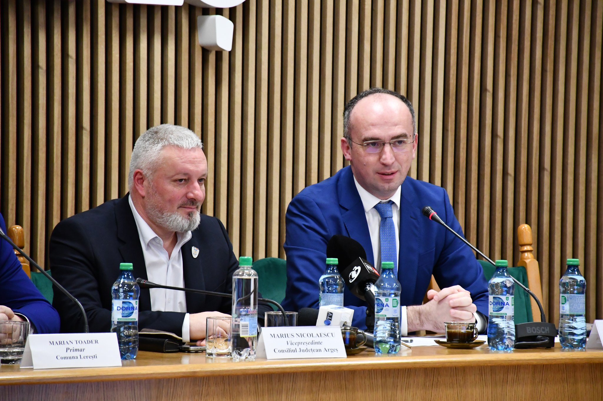
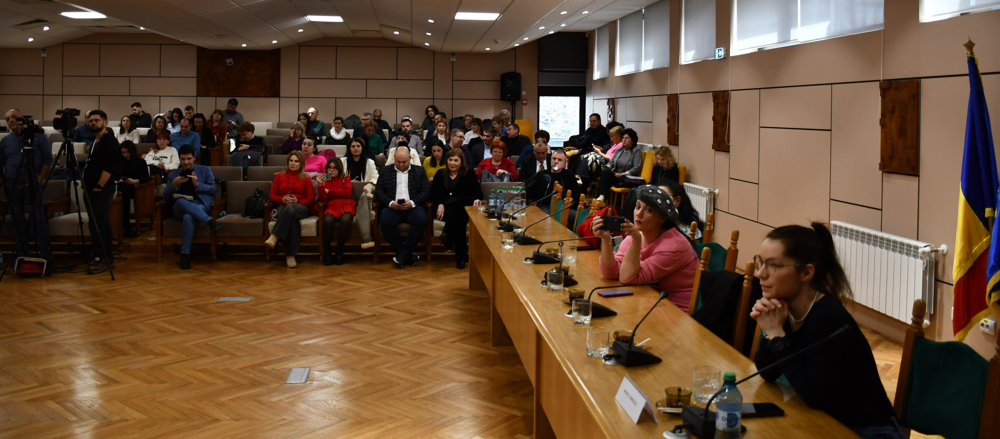
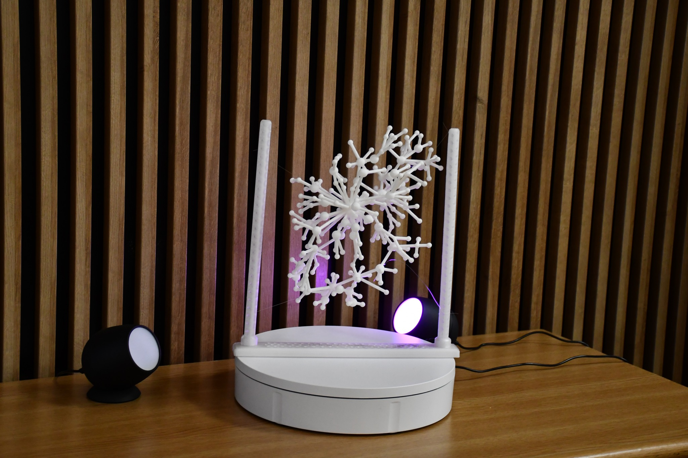

Argeș – Champion County in Cancer and Cardiovascular Disease Prevention
January 29, 2026
The Argeș County Council hosted an event organized by the Center for Innovation in Medicine (InoMed) – "Argeș – Champion County in Cancer and Cardiovascular Disease Prevention."
The event brought together public administration decision-makers, health professionals, local community representatives, and institutional partners with the aim of defining a common prevention strategy: reducing inequalities in access to health services, increasing health literacy, and implementing practical, measurable interventions adapted to the needs of the population in Argeș County.
The conference was supported by:
- Mr. Marius Nicolaescu, Vice-President of the Argeș County Council
- Dr. Marius Geantă, physician, native of Câmpulung Muscel, Founder and Director of the Center for Innovation in Medicine
- Mr. Marian Toader, Mayor of Lerești Commune
- Prof.Marian-Gabriel Hâncean, Center for Innovation in Medicine
- Dr. Cosmina Cioroboiu, Center for Innovation in Medicine
- Prof. Christopher McCarty, Professor of Anthropology, University of Florida (USA)
Pilot Experience and Best Practices
A concrete example presented during the event is the Living Lab in Lerești commune, the first living lab in Romania dedicated to preventing cancer and cardiovascular diseases, developed through the European 4P-CAN project. The evidence-based model, co-created with citizens, has already been recognized at the European level through accreditation in the European Network of Living Labs. This initiative represented the first concrete step in implementing the project "Argeș – Champion County in Cancer and Cardiovascular Disease Prevention."
Approval of the Strategic Partnership
Building on the success of the pilot experience in Lerești, the Partnership Agreement between the Argeș County Council and the Center for Innovation in Medicine – InoMed was approved today during the Argeș County Council meeting for a duration of four years, with the possibility of extension. The partnership establishes the collaboration framework for expanding the project to the entire county level, supporting major European prevention and public health initiatives.
Statements
"We wanted to extend the experience from Lerești to the county level. The partnership with the Center for Innovation in Medicine will allow for the implementation of prevention projects in as many localities in Argeș as possible. The exhibition presented today transforms scientific data into works of art, but also conveys extremely useful information for the health of our communities."
"The 4P-CAN project revolutionizes primary cancer prevention by actively involving citizens. We started in Lerești, but our goal is to extend this model to the entire Argeș County. The partnership with the County Council facilitates the expansion of these best practices and the implementation of innovative solutions in public health."
"I want to thank Dr. Marius Geantă for choosing Lerești as the first location to implement this project. I also thank the County Council for their collaboration and for continuing the project at the county level. Throughout the implementation, we held meetings with citizens, and what impressed us most was their receptiveness. People came voluntarily and got actively involved in questionnaires and discussions, without being promised anything. Their involvement shows that the project brings real benefits. Lerești was thus promoted not only locally but also in Brussels, at the European Commission, in Strasbourg, and at the United Nations, where Dr. Geantă presented the project and the collaboration with the Zimbrii-Lerești football team, the school, the karate club, and all sports activities in the commune. A concrete and remarkable result is the introduction of walking football, organized in the sports hall, which began as an inter-communal competition. For his contribution, last year Dr. Marius Geantă was declared an honorary citizen of Lerești Commune and is one of our local ambassadors."
"At InoMed, we work with a multidisciplinary team—doctors, experts in social sciences, implementation, communication, and data science—that makes a difference in the community. In Lerești commune, we implemented concrete disease prevention interventions focused on nutrition, physical activity, and reducing risk factors. For adults, we introduced innovative activities such as walking football, adapted even for people with various pathologies, and for children, we organized Kendama competitions and other games that help them develop physical and cognitive skills, encouraging movement and socialization."
"The Art of Networks" Exhibition
The event concluded with a visit to "The Art of Networks" exhibition, which transforms scientific data into accessible visual representations, offering an educational tool for cancer and cardiovascular disease prevention.
"Simply put, a diamond and a pencil lead are made of the same material—carbon. The difference isn't in the substance, but in how the atoms are connected: the same matter, arranged differently, produces completely different results. If we replace atoms with people, we see the same principle: a person or a group of people, connected in a certain way, will have access to opportunities and prosper, or, if the network does not support them, will encounter difficulties—in career, health, or lifestyle. That is why it is not enough to say 'smoke less' or 'eat healthier.' Individual behaviors are influenced by the network of people around us. It is extremely hard to change our lifestyle if the people we surround ourselves with have unhealthy habits. The social network functions like an ecosystem: 'healthy' nodes—people with protective behaviors—can influence us positively, while 'unhealthy' nodes can push us in harmful directions. Understanding and working at the network level, not just the individual level, is the key to effective prevention and sustainable health."
The exhibition is hosted in the ground floor lobby of the Argeș County Council and can be visited throughout next week.
Thus, the Argeș County Council continues to support the health of Argeș residents, backing all projects and initiatives dedicated to prevention and the promotion of a healthy lifestyle.
Photo Gallery



+17 more
© 4P-CAN Project. All rights reserved. Design: Bogdan Vidrașcu based on a template from HTML5 UP.